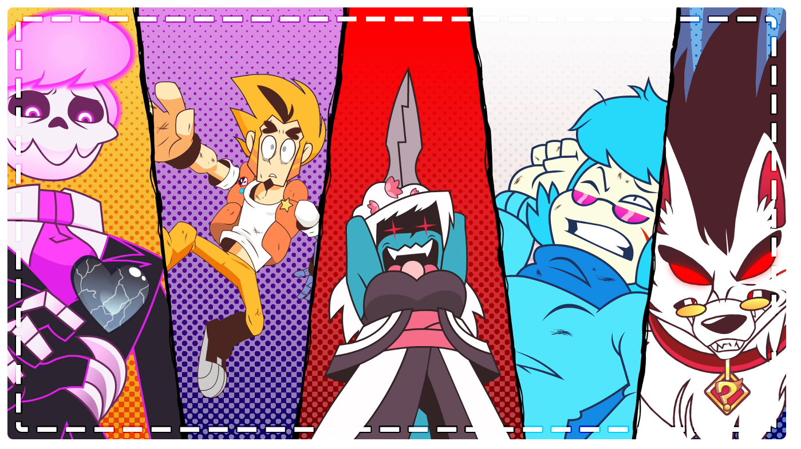

Mystery Skulls Animated(MSA)는 뮤지션 뤼스 더벅의 1인 프로젝트 Mystery Skulls의 노래를 사용하여 만든 웹 애니메이션 시리즈이다.
메인 캐릭터는 Lewis(루이스), Arthur(아서), Vivi(비비), Mystery(미스테리), Shiromori(시로모리), ?(정체불명)으로 총 6명이 있다.
미스터리 스컬즈는 유튜브에서 활동하는 애니메이터 MysteryBen27과 팀이 제작하고 있다. 그들의 동료 5명이서 함께 제작한 웹 애니메이션으로 그의 유튜브 채널에서 확인 가능하다.
애니메이션 뮤직 비디오는 이전에도 많았지만, 특기할 만한 점은 이 시리즈와 캐릭터들은 비공식적 2차 창작이라는 점이다. 고릴라즈나 Studio Killers처럼 가상의 캐릭터들을 내세운 가공의 밴드가 아니라, 이미 있는 뮤지션의 곡과 가사를 바탕으로 스토리와 세계관을 짜서 창작한 애니메이션이다.
많은 곳에서 모티브를 얻어 왔는데 스쿠비 두 시리즈에서 많은 영향을 받은 것 같다.
스토리의 흐름은 크게 두 갈래로 나뉘어진다. 루이스와 아서와의 갈등, 비비, 미스테리와 시로모리의 갈등으로 두 갈래로 나뉘어진다. 이 외에도 많은 사건이 있으니 관심이 있으면 직접 관람하는 것을 추천한다.

시리즈 일람은 다음과 같다.
- ① GHOST _ 2014.10.26
- ② FREAKING OUT _ 2016.04.15
- ③ HELLBENT_2018.10.13
2년 주기로 하나의 작품이 나오고 있으며, 총 5개를 한 시리즈로 제작하겠다고 하였으므로 2개의 작품이 더 나올 예정. 애니메이션은 애초에 제작 기간이 긴데 작업자들은 본업이 있기 때문에 제작하는 시간이 오래 걸릴 수 밖에 없다. 꾸준히 인내를 갖고 기다리면 작품이 나와 있을 것이다.
제작자 Mysteryben27의 텀블러를 보면 그들이 작업했던 파일과 내용을 공유하기도 하므로 애니메이션 제작에 관심이 있다면 한 번쯤 둘러보는 것도 괜찮을 것이다.